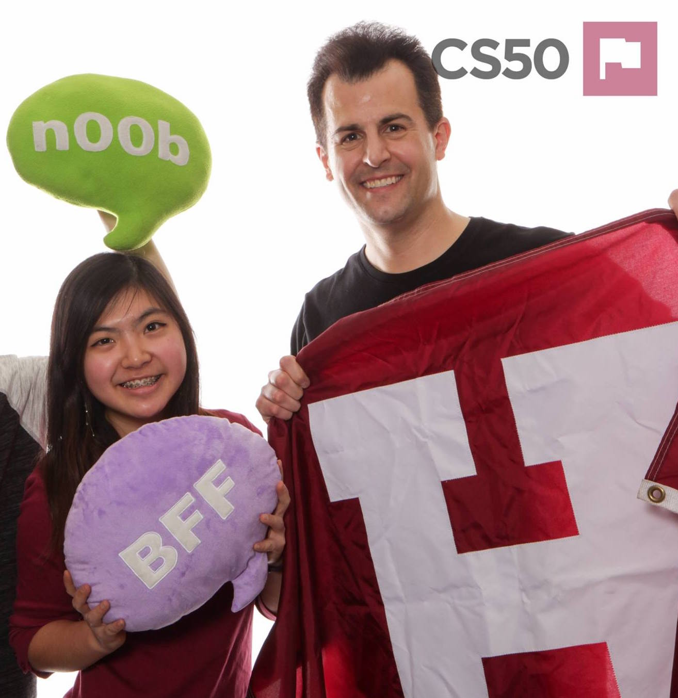

Thank you for visiting my website! My name is Allison (or 奥玲 in Mandarin and みさと in Japanese).
I'm a rising sophomore at Harvard concentrating in Computer Science with a passion for connecting the world. For me, that means developing technology, making music, and learning foreign languages. Some highlights of this include studying abroad in Hangzhou in high school, playing in orchestras and singing a capella, and interning at TripAdvisor!
Please feel free to check out my projects, résumé, or just say hi. :)
What I've been up to
Current Obsessions
- LEARNING HINDI: As I've been interning with some college students from IIT (who also happen to be both the best teammates and friends I could ask for), I've started to want to pick up another language-- Hindi! I've been learning a bit through some apps I installed on my phone, but mostly from the best in my opinion-- native speakers! नमस्कार! मेरा नाम Allison है। मैं अमेरिका से हूँ। आपसे मिलकर अच्छा लगा।
- KARAOKE: Whether it's with fellow interns, coworkers, or friends, karaoke is an activity not to be missed in Japan! Most places have a large selection of songs, so I've been able to sing anything from American pop music to ballads in Mandarin to Japanese rock!
- TRAVELLING ABOUT: Because it's really my first time living in Tokyo, it's given me so many opportunities to explore the area, from the busiest metropolitan crossings to more picturesque country landscapes to ancient architecture. Everything is so different from the suburbs that I come from, so every weekend feels like I'm entering an utterly separate universe.